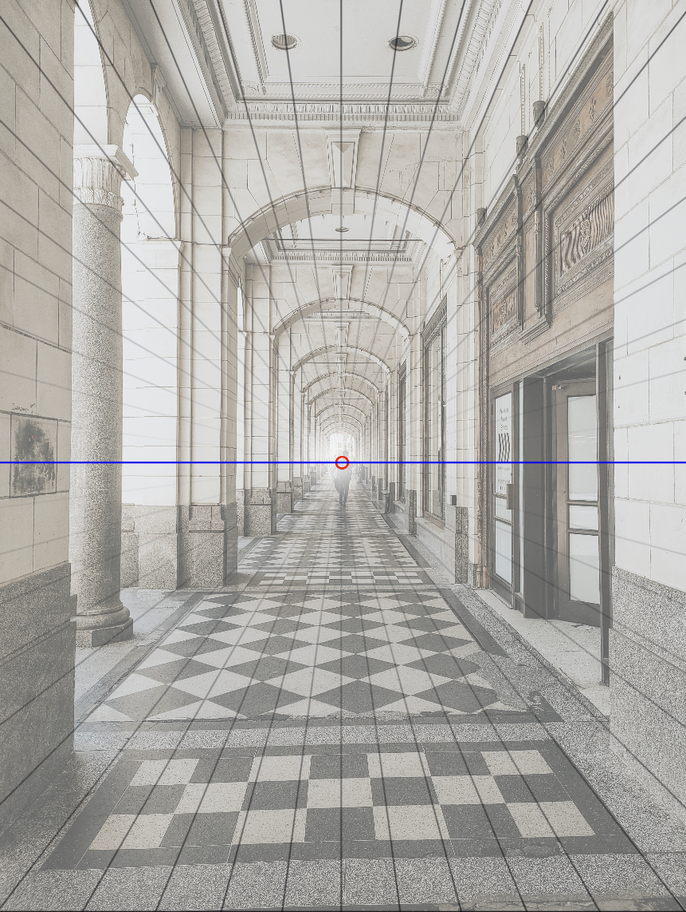
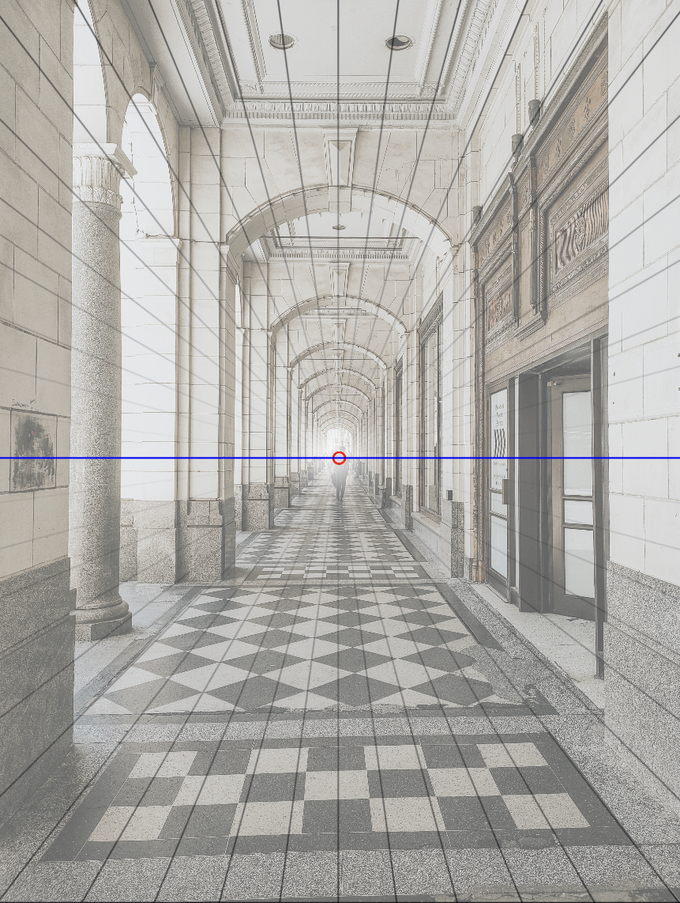

Studying the Fundamentals of Art
Essentially, form refers to three-dimensional objects. Perspective is the presentation of these three-dimensional objects in a similarly three-dimensional space.
Geometric forms are made out of simple, recognizable shapes. These shapes include cubes, cylinders, rectangular prisms, and more. Organic forms are more complex in comparison. You can think of geometric shapes as a block of marble and organic forms as the intricate statue that is sculpted from it. Similarly, artists make use of geometric shapes in the early stages of sketching. You may have seen some examples of these in anatomy tutorials: spheres serve as the head, cylinders as limbs, and rectangles for the chest and pelvis. Each artist has a different way of interpreting and simplifying forms, so don't worry about following every tutorial to the tee.
 

Perspective makes use of vanishing points. These are the points where lines converge.
This image of a hallway is an example of a one-point perspective, in which there is only one vanishing point. Follow the lines of the hallway and see where they converge.

This image of a building is an example of a two-point perspective, in which there is two vanishing points. In this instance, the vanishing points are located beyond the image's field of view, which is not uncommon. The line connecting two vanishing points is called the horizon line.
Studying these two fundamentals of art is essential in your art journey. Understanding the forms of an object can help you break it down into simpler shapes and will make drawing easier. Using your knowledge of perspective, you can then manipulate, combine, and move these forms however you wish. Remember to use guidelines and references while drawing environmental or background illustrations.
Here are some Youtube videos to help you get started:
David Finch - How to Draw Figures in Perspective
Proko - 6 Steps to Draw Anything
David Finch - perspective hacks